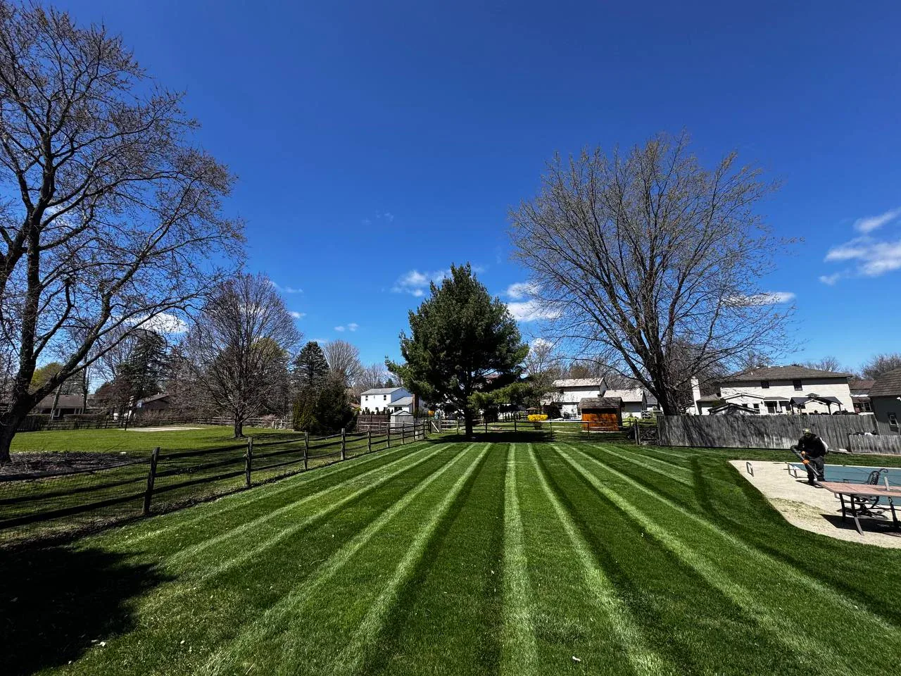

Home / Local Expertise
Northwest Ohio authority
Local expertise for Perrysburg, Toledo, Wood County, and Lucas County.
Terramorph serves residential, commercial, and industrial properties with practical experience in drainage diagnosis, hardscape durability, plant health, snow response, and Northwest Ohio soil and weather conditions.
Great work at a fair price. They did what they said they were going to do, when they said they would do it.Richard Hansen
A lot of companies tell you what they are going to do. This company far exceeded their word.jon mercurio
Attention to detail was 2nd to none!Adam Raider
They did an excellent job and completed the same day. I would highly recommend them.Teresa Thompson
10/10 Company, the boys made my house look great. Customer Service is great, best deal on the market.Alejandro Urrea
Great work very accommodating and extremely professional will definitely have them do all my future work.Pete Detgen
Great, professional group of guys!Josh Johnson
They did a fantastic job for me. I will recommend them to colleagues.Dominic Urquiola
Fast and reliable. Ty did excellent work and very reasonable cost. I would not hesitate to suggest him to others.Larry Calcamuggio
Amazing service every time and prompt to all appointments.CJ Miller
Local expertise
Locally owned and operated for Northwest Ohio property problems.
Terramorph brings practical field experience and a property-first approach to drainage, grading, plant health, hardscape base issues, maintenance needs, and seasonal work before recommending a scope.
See Our Local ApproachLocal company
One Northwest Ohio team for the work around your property.
Terramorph is based in the Perrysburg area and serves homeowners, businesses, and property owners across Wood and Lucas County. Call or send the project details to confirm service fit and the next estimate step.
- Company
- Terramorph LLC
- Call
- 419-873-6801
- Online
- terramorphllc.com
- Home base
- Perrysburg, OH 43551
- Service area
- Wood County, Lucas County, Perrysburg, Toledo, Maumee, and Northwest Ohio
- Specialties
- Landscaping, hardscaping, drainage, lawn care, and outdoor property services
Free estimates are available for landscaping, patios, drainage, lighting, maintenance, cleanups, snow service, and related outdoor property work.
Local service pages
Estimate information by city and project type.
Use these pages to review the most relevant Terramorph services for your city, then call Terramorph for a free estimate.
Landscape design, beds, cleanups, and outdoor upgrades for Toledo properties.
Terramorph helps Toledo homeowners and property owners clean up curb appeal, rebuild tired beds, plan better outdoor spaces, and connect landscaping with drainage, patios, lighting, and maintenance.
Open local page →Toledo · Drainage SolutionsDrainage solutions for wet yards, runoff, and standing water in Toledo.
For Toledo yards with soggy grass, low spots, roof runoff, or water moving toward hardscapes and foundations, Terramorph reviews the property and recommends practical ways to route water.
Open local page →Toledo · Paver Patios and HardscapesPaver patios, walkways, and outdoor living upgrades for Toledo homes.
Terramorph plans patio and walkway projects around base prep, drainage, transitions, access, and the way the backyard needs to work for hosting, grilling, and daily use.
Open local page →Perrysburg · Landscape DesignFinished landscape design and installation for Perrysburg homes.
Terramorph helps Perrysburg homeowners upgrade curb appeal, beds, patios, lighting, drainage, and maintenance so the whole property feels planned instead of patched together.
Open local page →Perrysburg · Drainage SolutionsPerrysburg drainage solutions for standing water, clay soil, and runoff.
Terramorph reviews grading, low spots, downspouts, lawn saturation, patio runoff, and discharge options before recommending drainage work for Perrysburg properties.
Open local page →Perrysburg · Paver Patios and HardscapesPaver patios and outdoor living spaces for Perrysburg backyards.
Terramorph builds patio and hardscape plans around how the family will use the space, how water moves, and how the patio connects to lawn, beds, steps, lighting, and walkways.
Open local page →Maumee · Landscape DesignLandscape design, beds, and property upgrades for Maumee homes.
Terramorph helps Maumee properties look cleaner, drain better, and feel more intentional with landscape design, bed installation, mulch, rock, lighting, patios, cleanups, and maintenance.
Open local page →Maumee · Drainage SolutionsDrainage solutions for Maumee yards with standing water or runoff problems.
Terramorph can review wet areas, downspout routing, grading, discharge options, and surrounding landscape conditions before recommending drainage work.
Open local page →Maumee · Paver Patios and HardscapesPaver patios, walkways, and hardscape upgrades for Maumee backyards.
Terramorph helps Maumee homeowners turn outdoor areas into usable patios, walkways, seating spaces, and finished backyards with drainage and base prep considered first.
Open local page →Priority service areas
Focused on Northwest Ohio.
Deeper planning
Services, completed work, and project planning resources.
Why homeowners trust Terramorph
Local outdoor work backed by reviews, project photos, and clear next steps.
Customer feedback, BBB accreditation, completed-work photos, and Northwest Ohio experience give homeowners useful context before requesting an estimate.
★★★★★“Great work very accommodating and extremely professional will definitely have them do all my future work.”
— Pete Detgen
★★★★★“Bravo to the young men who took care of my mother’s yard. Thank you so much. Mom is really happy.”
— Patrick Walker
★★★★★“Stone wall around porch was removed and reset the way we wanted. The men were very polite.”
— Roger Samson
Recent work
Real Terramorph projects around Northwest Ohio.


Fast free estimate
Get a Local Property Estimate
Use the request form to send Terramorph the basics first, or call directly if the project is urgent.
Best next step
Send the project details, then Terramorph can follow up.
The quote page asks for name, phone, city, address, service type, timeline, and project notes so the crew has enough context before the first call.
- Good for landscaping, patios, drainage, lighting, cleanups, maintenance, and snow service.
- Works on mobile so homeowners can text the request details directly.
- Call 419-873-6801 anytime for urgent property issues or scheduling questions.
Local estimates
Tell us where you are and what you need done.
Whether it is drainage, design, a patio, cleanup, mowing, mulch, trimming, or bed maintenance, Terramorph can point you toward the right next step.